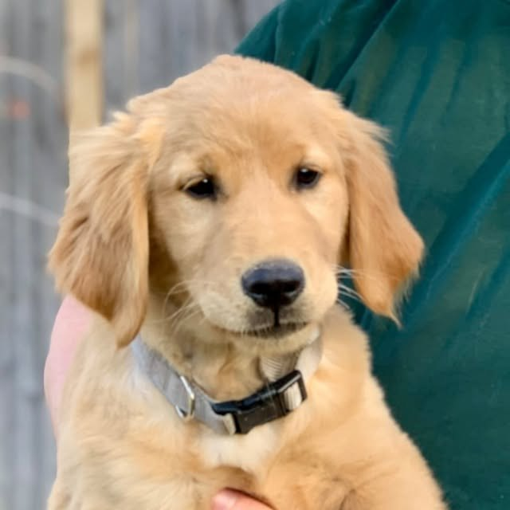
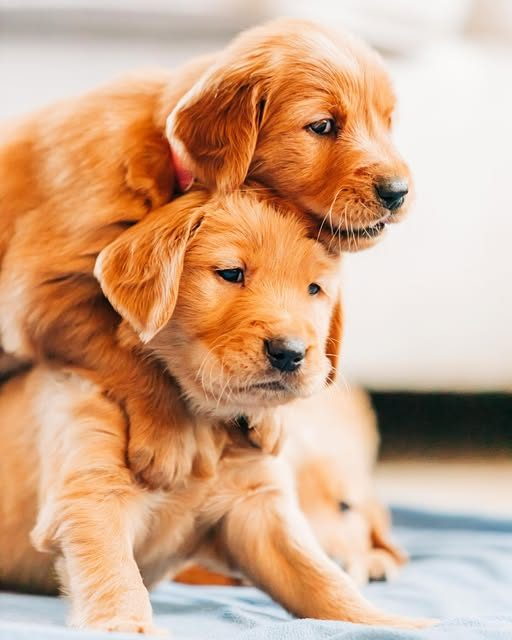
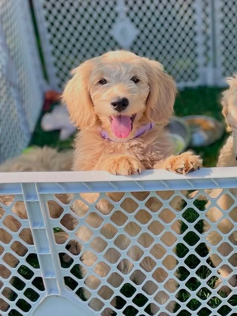

Summit Family Goldens
Golden Retrievers
AKC-registered Golden Retriever puppies. Breeding dogs are Embark tested, and we share those results with families who apply.
 Call or text
Call or text
Loveland, Colorado
Summit Family Goldens is a small family breeder in Northern Colorado. Puppies grow up in the house, with people around them, and we only raise as many litters as we can keep that way.



The household
Summit Family Goldens raises AKC Golden Retrievers. Summit Heritage Canines raises Goldendoodles, including English Cream and mini Goldendoodles. The dogs share the same home in Northern Colorado.
Avery, a dark red Golden Retriever, and Vail, an English Cream, live here as family dogs. Puppies are underfoot and handled from the first weeks, then matched to a home that fits them.
The dogs

Summit Family Goldens
AKC-registered Golden Retriever puppies. Breeding dogs are Embark tested, and we share those results with families who apply.

Summit Heritage Canines
English Cream and mini Goldendoodles, raised in the same house as the Goldens. Photos and litter news are posted on their own account.
Raising them
Puppies live with the family, around ordinary rooms, noise, and hands, from the start.
Litters stay rare so each puppy gets time. We would rather raise one litter well than keep a kennel full.
Golden Retriever puppies are AKC registered. Breeding dogs are Embark tested, and those results are part of the conversation once you apply.
The owner application comes before a placement. We read it, and we talk, before a puppy is chosen for a family.
Follow along
Litter photos and who is still looking for a home are posted on Instagram and Facebook. When something changes, it changes there, so this page does not keep a for-sale list.
Questions
Summit Family Goldens and Summit Heritage Canines are in Loveland, Colorado, in Northern Colorado.
Availability changes with each litter. Current puppies and photos are posted on Instagram and Facebook, so this page does not keep a for-sale list.
Yes. Golden Retriever puppies from Summit Family Goldens are AKC registered. Breeding dogs are Embark tested, and we share those results with families who apply.
Summit Heritage Canines raises English Cream and mini Goldendoodles in the same home as the Golden Retrievers.
Call or text (970) 685-1144 and tell us about your home. We read every application before we talk about a placement.
Start the owner applicationOwner application
We read every application before we talk about a puppy.